Introduction to SEM with lavaan
Fernanda Alves Martins
Javier Martinez Arribas
28 March, 2023
Structural Equation Modelling
Structural Equation Modeling (SEM) is a comprehensive and flexible approach that consists of studying, in a hypothetical model, the relationships between variables, whether they are measured or latent, meaning not directly observable, like any psychological construct (for example, intelligence, satisfaction, hope, trust).
Hypothetical because we try to predict and explain phenomena based on non-experimental observations.
Structural Equation Modelling
Structural equation modeling is a linear model framework that models both simultaneous regression equations with latent variables.
Models such as linear regression, multivariate regression, path analysis, confirmatory factor analysis, and structural regression can be thought of as special cases of SEM.
Structural Equation Modelling
The following relationships are possible in SEM:
observed to observed variables (e.g. regression)
latent to observed variables (e.g. confirmatory factor analysis)
latent to latent variables (e.g. structural regression)
Structural Equation Modelling
The most common models that fall under the SEM framework including
simple regression
multiple regression
multivariate regression
path analysis
confirmatory factor analysis
structural regression
Structural Equation Modelling
To summarize this brief introduction, it is important to recognize that interpreting correlation or partial correlation in terms of causality can be imprudent.
Mathematics alone cannot reveal the nature of the relationship between two variables, but can only indicate the extent to which they tend to vary together.
Structural Equation Modelling
As for the causality, it requires three criteria (or conditions):
the association rule, that is the two variables must be statistically associated.
the causal order between variables, the (quite often) temporal order where the cause precedes the effect must be determined without ambiguity and definitely with theoretical reasons that allow for assuming the order.
the non-artificiality rule, in which the association between the two variables must not disappear when we remove the effects of variables that precede them in the causal order.
Structural Equation Modelling
It is evident that meeting these three criteria is only achievable through experimentation, limited by what is feasible and conceivable.
It should be noted that no matter how advanced or intelligent a statistical technique may be, such as analysis of variance, regression, or path analysis, it cannot establish a causal relationship between variables.
Definitions
observed variable: a variable that exists in the data, a.k.a item or manifest variable
latent variable: a variable that is constructed and does not exist in the data
exogenous variable: an independent variable either observed (x) or latent ( ) that explains an endogenous variable
endogenous variable: a dependent variable, either observed (y) or latent ( ) that has a causal path leading to it
Definitions
measurement model: a model that links observed variables with latent variables
indicator: an observed variable in a measurement model (can be exogenous or endogenous)
factor: a latent variable defined by its indicators (can be exogenous or endogenous)
loading: a path between an indicator and a factor
Definitions
structural model: a model that specifies causal relationships among exogenous variables to endogenous variables (can be observed or latent)
regression path: a path between exogenous and endogenous variables (can be observed or latent)
Path Diagram Legend
In order to make it easier to comprehend the matrix equations, a path diagram will be provided for each matrix formulation, as it serves as a symbolic and straightforward visualization tool.
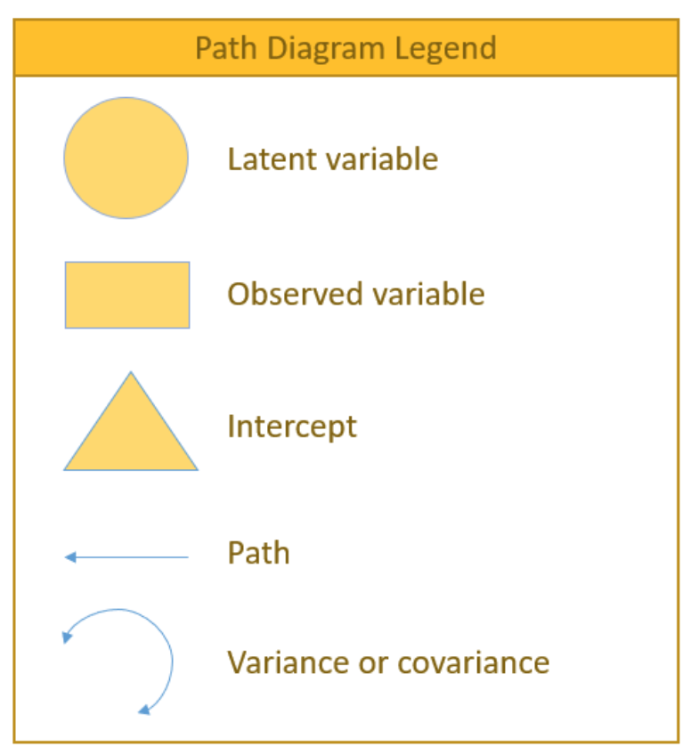
Examples of SEM models
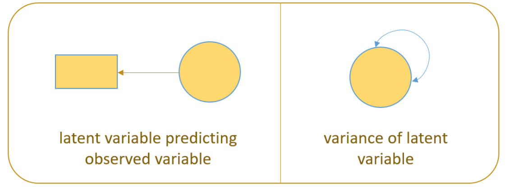
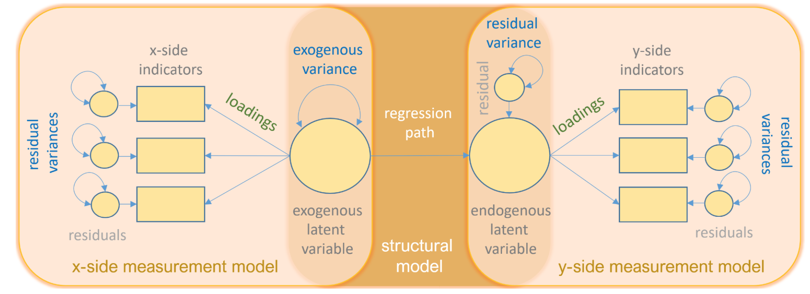
Linear regression diagram
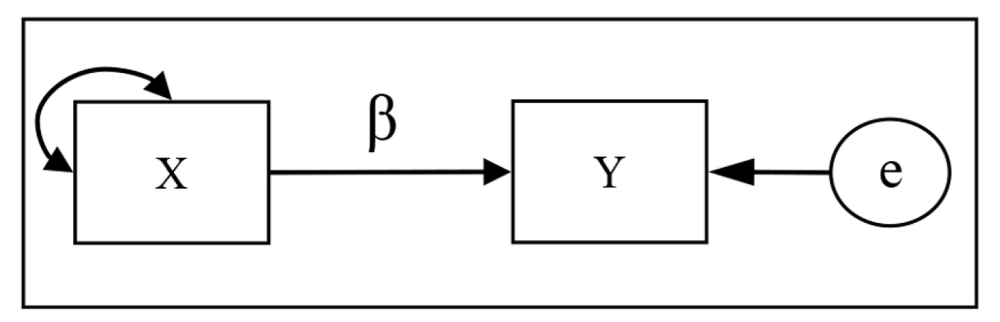
Setting up
Firstly we need to install the next packages:
lavaan and semPlot
Then load with library()
Example Data
We will utilize the sample data integrated into lavaan to examine its syntax and output.
Our example uses a classic data set from the literature on the testing of mental abilities.
The Holzinger and Swineford (1939) data set contains test scores from around 300 teenagers at two different schools, each of whom completed a series of tests measuring performance for different tasks.
Example Data
We can summarise the relationships between the variables by generating a covariance matrix:
x1 x2 x3 x4 x5 x6 x7 x8 x9
x1 1.36 0.41 0.58 0.51 0.44 0.46 0.09 0.26 0.46
x2 0.41 1.39 0.45 0.21 0.21 0.25 -0.10 0.11 0.24
x3 0.58 0.45 1.28 0.21 0.11 0.24 0.09 0.21 0.38
x4 0.51 0.21 0.21 1.36 1.10 0.90 0.22 0.13 0.24
x5 0.44 0.21 0.11 1.10 1.67 1.02 0.14 0.18 0.30
x6 0.46 0.25 0.24 0.90 1.02 1.20 0.14 0.17 0.24
x7 0.09 -0.10 0.09 0.22 0.14 0.14 1.19 0.54 0.37
x8 0.26 0.11 0.21 0.13 0.18 0.17 0.54 1.03 0.46
x9 0.46 0.24 0.38 0.24 0.30 0.24 0.37 0.46 1.02Example Data
It can be more helpful to look at the correlation matrix, which is a standardised version of the covariance matrix:
x1 x2 x3 x4 x5 x6 x7 x8 x9
x1 1.00 0.30 0.44 0.37 0.29 0.36 0.07 0.22 0.39
x2 0.30 1.00 0.34 0.15 0.14 0.19 -0.08 0.09 0.21
x3 0.44 0.34 1.00 0.16 0.08 0.20 0.07 0.19 0.33
x4 0.37 0.15 0.16 1.00 0.73 0.70 0.17 0.11 0.21
x5 0.29 0.14 0.08 0.73 1.00 0.72 0.10 0.14 0.23
x6 0.36 0.19 0.20 0.70 0.72 1.00 0.12 0.15 0.21
x7 0.07 -0.08 0.07 0.17 0.10 0.12 1.00 0.49 0.34
x8 0.22 0.09 0.19 0.11 0.14 0.15 0.49 1.00 0.45
x9 0.39 0.21 0.33 0.21 0.23 0.21 0.34 0.45 1.00Example Data
It can be more helpful to look at the correlation matrix, which is a standardised version of the covariance matrix:
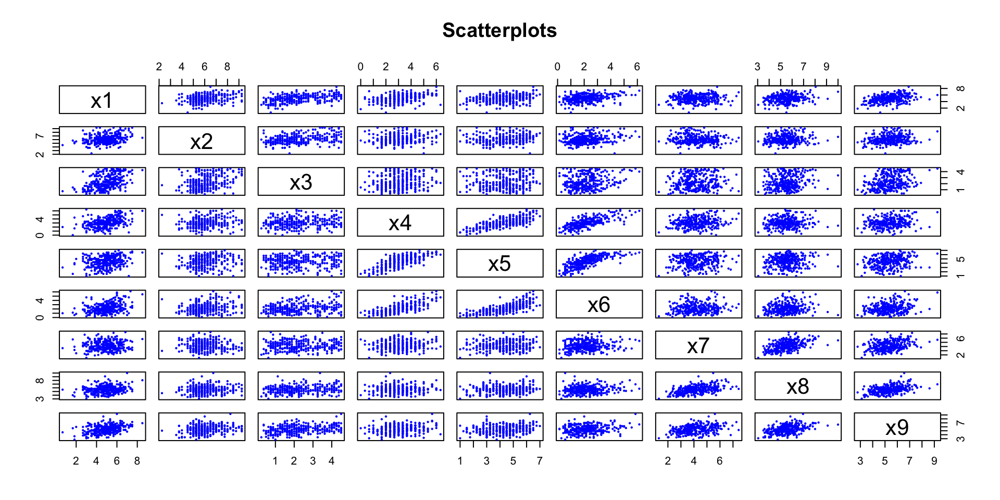Example Data
The correlation matrix displays predominantly positive associations between various variable combinations, with the highest correlation (r = 0.73) observed between x4 and x5, which refer to paragraph comprehension and sentence completion tasks.
Notably, a cluster of high correlations is centered around x4, x5, and x6.
Nevertheless, merely by examining the correlation matrix, it proves difficult to comprehend the data set’s structure.
Alternatively, a hypothetical model can be constructed to depict the potential relationships.
lavaan Syntax: Operators
lavaan uses a simplified syntax using three primary operators:
~for regressions=~for latent variables~~for variances and covariances
Every model will be specified with strings of text containing some combination of these three operators.
lavaan Syntax: Functions
lavaan uses three primary functions for estimating models:
cfa()for Confirmatory Factor Analysissem()for Structural Equation Modelslavaan()for all models.
To view the default arguments for each function, you can access the help documentation.(?cfa)
It is normal to utilize sem() for all my analyses as I am accustomed to its default settings and usually estimate traditional structural equation models.
Linear regression
It is highly likely that most, if not all of you, are familiar with how to specify a linear regression in R:
We can specify a simple linear regression in lavaan similarly:
This syntax specifies that x4 is regressed on ageyr, with the dependent variable placed on the left of ~ and the independent variable(s) on the right.
Note the formulas for lavaan calls are in quotes:
lavaan requires text input, which it converts into individual equations internally.
Linear regression
Call:
lm(formula = x4 ~ ageyr, data = HolzingerSwineford1939)
Residuals:
Min 1Q Median 3Q Max
-2.94620 -0.72685 -0.06018 0.60649 3.15918
Coefficients:
Estimate Std. Error t value Pr(>|t|)
(Intercept) 5.91179 0.81917 7.217 4.41e-12 ***
ageyr -0.21935 0.06282 -3.492 0.000553 ***
---
Signif. codes: 0 '***' 0.001 '**' 0.01 '*' 0.05 '.' 0.1 ' ' 1
Residual standard error: 1.143 on 299 degrees of freedom
Multiple R-squared: 0.03917, Adjusted R-squared: 0.03596
F-statistic: 12.19 on 1 and 299 DF, p-value: 0.0005527Linear regression
lavaan 0.6-12 ended normally after 1 iterations
Estimator ML
Optimization method NLMINB
Number of model parameters 2
Number of observations 301
Model Test User Model:
Test statistic 0.000
Degrees of freedom 0
Parameter Estimates:
Standard errors Standard
Information Expected
Information saturated (h1) model Structured
Regressions:
Estimate Std.Err z-value P(>|z|)
x4 ~
ageyr -0.219 0.063 -3.503 0.000
Variances:
Estimate Std.Err z-value P(>|z|)
.x4 1.298 0.106 12.268 0.000Multiple linear regression
We can specify multiple regression models by including additional covariates on the right-hand side of the formulas.
In lm():
In sem():
CFA
Factor analysis can be categorized into two primary types: exploratory and confirmatory.
Exploratory factor analysis (EFA) is an exploratory technique used to comprehend the underlying psychometric characteristics of an unfamiliar scale.
In contrast, confirmatory factor analysis shares many of the same principles as EFA, but instead of allowing the data to reveal the factor structure, we pre-specify the factor structure and validate the psychometric properties of a pre-existing scale.
CFA
We can construct a first hypothetical model of the potential relationships.
One very simple model is that a single underlying factor determines performance on all tasks.
This general intelligence, or g, factor is widely discussed in the literature on human cognitive ability (Spearman 1904).
It is the classic example of a latent variable - a construct that we hypothesise might exist, but we cannot measure directly.
CFA
CFA
lavaan 0.6-12 ended normally after 31 iterations
Estimator ML
Optimization method NLMINB
Number of model parameters 18
Number of observations 301
Model Test User Model:
Test statistic 312.264
Degrees of freedom 27
P-value (Chi-square) 0.000
Model Test Baseline Model:
Test statistic 918.852
Degrees of freedom 36
P-value 0.000
User Model versus Baseline Model:
Comparative Fit Index (CFI) 0.677
Tucker-Lewis Index (TLI) 0.569
Loglikelihood and Information Criteria:
Loglikelihood user model (H0) -3851.224
Loglikelihood unrestricted model (H1) -3695.092
Akaike (AIC) 7738.448
Bayesian (BIC) 7805.176
Sample-size adjusted Bayesian (BIC) 7748.091
Root Mean Square Error of Approximation:
RMSEA 0.187
90 Percent confidence interval - lower 0.169
90 Percent confidence interval - upper 0.206
P-value RMSEA <= 0.05 0.000
Standardized Root Mean Square Residual:
SRMR 0.143
Parameter Estimates:
Standard errors Standard
Information Expected
Information saturated (h1) model Structured
Latent Variables:
Estimate Std.Err z-value P(>|z|) Std.lv Std.all
g =~
x1 1.000 0.510 0.438
x2 0.508 0.152 3.345 0.001 0.259 0.220
x3 0.493 0.146 3.376 0.001 0.252 0.223
x4 1.930 0.256 7.533 0.000 0.985 0.848
x5 2.123 0.282 7.518 0.000 1.084 0.841
x6 1.796 0.239 7.512 0.000 0.917 0.838
x7 0.385 0.137 2.803 0.005 0.196 0.180
x8 0.398 0.129 3.089 0.002 0.203 0.201
x9 0.606 0.138 4.383 0.000 0.309 0.307
Variances:
Estimate Std.Err z-value P(>|z|) Std.lv Std.all
.x1 1.098 0.092 11.895 0.000 1.098 0.808
.x2 1.315 0.108 12.188 0.000 1.315 0.951
.x3 1.212 0.099 12.186 0.000 1.212 0.950
.x4 0.380 0.048 7.963 0.000 0.380 0.281
.x5 0.486 0.059 8.193 0.000 0.486 0.293
.x6 0.356 0.043 8.295 0.000 0.356 0.298
.x7 1.145 0.094 12.215 0.000 1.145 0.967
.x8 0.981 0.080 12.202 0.000 0.981 0.960
.x9 0.919 0.076 12.105 0.000 0.919 0.906
g 0.261 0.069 3.775 0.000 1.000 1.000CFA
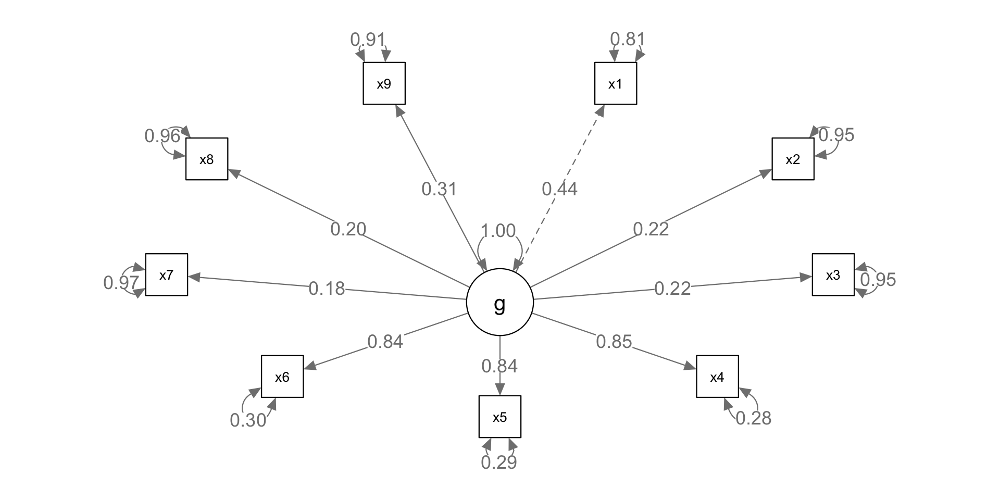CFA
An alternative model might be to propose that there are several latent variables, which map on to specific abilities that are probed by more than one test.
For example, we might propose a latent variable for the visual tasks (x1-x3), another for the literacy tasks (x4-x6) and a final one for the timed tasks (x7-x9). We could allow interdependencies (i.e. correlations) between these three latent variables, and represent the model with the diagram in Figure 12.3.
We are going to define three latent (unobserved) variables, visual, textual, and speed, each with three observed indicators.
CFA
CFA
lavaan 0.6-12 ended normally after 35 iterations
Estimator ML
Optimization method NLMINB
Number of model parameters 21
Number of observations 301
Model Test User Model:
Test statistic 85.306
Degrees of freedom 24
P-value (Chi-square) 0.000
Parameter Estimates:
Standard errors Standard
Information Expected
Information saturated (h1) model Structured
Latent Variables:
Estimate Std.Err z-value P(>|z|)
visual =~
x1 1.000
x2 0.554 0.100 5.554 0.000
x3 0.729 0.109 6.685 0.000
textual =~
x4 1.000
x5 1.113 0.065 17.014 0.000
x6 0.926 0.055 16.703 0.000
speed =~
x7 1.000
x8 1.180 0.165 7.152 0.000
x9 1.082 0.151 7.155 0.000
Covariances:
Estimate Std.Err z-value P(>|z|)
visual ~~
textual 0.408 0.074 5.552 0.000
speed 0.262 0.056 4.660 0.000
textual ~~
speed 0.173 0.049 3.518 0.000
Variances:
Estimate Std.Err z-value P(>|z|)
.x1 0.549 0.114 4.833 0.000
.x2 1.134 0.102 11.146 0.000
.x3 0.844 0.091 9.317 0.000
.x4 0.371 0.048 7.779 0.000
.x5 0.446 0.058 7.642 0.000
.x6 0.356 0.043 8.277 0.000
.x7 0.799 0.081 9.823 0.000
.x8 0.488 0.074 6.573 0.000
.x9 0.566 0.071 8.003 0.000
visual 0.809 0.145 5.564 0.000
textual 0.979 0.112 8.737 0.000
speed 0.384 0.086 4.451 0.000CFA
The larger the chi-square value the larger the difference between the sample implied covariance matrix and the sample observed covariance matrix, and the more likely you will reject your model.
David Kenny states that for models with 75 to 200 cases chi-square is a reasonable measure of fit, but for 400 cases or more it is nearly almost always significant.
Our conclusion may be supplemented with other fit indices.
semPlot diagram
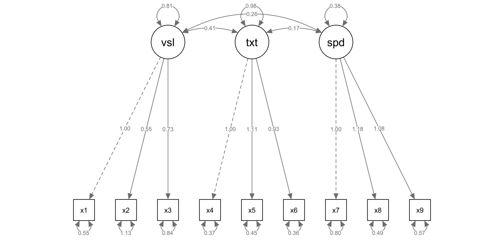STEP 1: model specification
This is what we have done just done. We consider the possible relationships between the variables we have measured (or are planning to measure), and one or more hypothesised latent variables.
It can often be helpful to create diagrams when designing a model, as a guide to thinking about possible relationships.
This is one of the real strengths of structural equation modelling, as it allows us to make theories and hypotheses explicit by instantiating them in a model, which we then go on to test empirically.
STEP 2: model identification
Once we have specified our model, we then check that it is suitable for conducting SEM.
This involves a process called model identification, where we check that the degrees of freedom in the model (known as the number of free parameters) does not exceed the degrees of freedom in the data set (known as the number of data points). We can have the next different models:
Satured models: nº data points = free parameters
Under-identified models: nº data points < free parameters
Over-identified models: nº data points > free parameters
STEP 2: model identification
degrees of freedom in the data set (known parameters): n(n+1)/2. Serve as the upper limit of the number of parameters you can possibly estimate in your model.
degrees of freedom in the model (model parameters): the number of parameters you need to estimate in your model. (The total number of latent variables + the number of error terms on the measured variables + any covariances between measured variables)
STEP 3: model evaluation
Once fitted, the model is traditionally assessed using a chi-square statistic. Somewhat counterintuitively, a non-significant chi-square statistic indicates a good fit.
However, as with other significancetests, this turns out to be highly dependent on sample size and with large samples (e.g. N>400) will often be statistically significant even when the model fit is actually quite good.
To address this, several alternative fit indices have been developed. Some of these (for example, the Bentler-Bonett index, Comparative fit index, Bollen index, and McDonald index) indicate a good fit when they have values near 1.
STEP 3: model evaluation
Conventions about exactly what values are considered ‘good’ will differ across disciplines, but 0.9 is often acceptable.
For other fit estimates, such as the Root Mean Square Error or measures of residual variance, a low value near 0 indicates a good fit.
Model Fit Statistics
Typically, rejecting the null hypothesis is a good thing, but if we reject the CFA null hypothesis then we would reject our user model (which is bad).
When fit measures are requested, lavaan outputs a plethora of statistics, but we will focus on the four commonly used ones:
Model chi-square is the chi-square statistic we obtain from the maximum likelihood statistic (in lavaan, this is known as the Test Statistic for the Model Test User Model)
CFI is the Comparative Fit Index – values can range between 0 and 1 (values greater than 0.90, conservatively 0.95 indicate good fit)
Model Fit Statistics
TLI Tucker Lewis Index which also ranges between 0 and 1 (if it’s greater than 1 it should be rounded to 1) with values greater than 0.90 indicating good fit. If the CFI and TLI are less than one, the CFI is always greater than the TLI.
RMSEA is the root mean square error of approximation In lavaan, you also obtain a p-value of close fit, that the RMSEA < 0.05. If you reject the model, it means your model is not a close fitting model.
Model Fit Statistics
lavaan 0.6-12 ended normally after 35 iterations
Estimator ML
Optimization method NLMINB
Number of model parameters 21
Number of observations 301
Model Test User Model:
Test statistic 85.306
Degrees of freedom 24
P-value (Chi-square) 0.000
Model Test Baseline Model:
Test statistic 918.852
Degrees of freedom 36
P-value 0.000
User Model versus Baseline Model:
Comparative Fit Index (CFI) 0.931
Tucker-Lewis Index (TLI) 0.896
Loglikelihood and Information Criteria:
Loglikelihood user model (H0) -3737.745
Loglikelihood unrestricted model (H1) -3695.092
Akaike (AIC) 7517.490
Bayesian (BIC) 7595.339
Sample-size adjusted Bayesian (BIC) 7528.739
Root Mean Square Error of Approximation:
RMSEA 0.092
90 Percent confidence interval - lower 0.071
90 Percent confidence interval - upper 0.114
P-value RMSEA <= 0.05 0.001
Standardized Root Mean Square Residual:
SRMR 0.065
Parameter Estimates:
Standard errors Standard
Information Expected
Information saturated (h1) model Structured
Latent Variables:
Estimate Std.Err z-value P(>|z|) Std.lv Std.all
visual =~
x1 1.000 0.900 0.772
x2 0.554 0.100 5.554 0.000 0.498 0.424
x3 0.729 0.109 6.685 0.000 0.656 0.581
textual =~
x4 1.000 0.990 0.852
x5 1.113 0.065 17.014 0.000 1.102 0.855
x6 0.926 0.055 16.703 0.000 0.917 0.838
speed =~
x7 1.000 0.619 0.570
x8 1.180 0.165 7.152 0.000 0.731 0.723
x9 1.082 0.151 7.155 0.000 0.670 0.665
Covariances:
Estimate Std.Err z-value P(>|z|) Std.lv Std.all
visual ~~
textual 0.408 0.074 5.552 0.000 0.459 0.459
speed 0.262 0.056 4.660 0.000 0.471 0.471
textual ~~
speed 0.173 0.049 3.518 0.000 0.283 0.283
Variances:
Estimate Std.Err z-value P(>|z|) Std.lv Std.all
.x1 0.549 0.114 4.833 0.000 0.549 0.404
.x2 1.134 0.102 11.146 0.000 1.134 0.821
.x3 0.844 0.091 9.317 0.000 0.844 0.662
.x4 0.371 0.048 7.779 0.000 0.371 0.275
.x5 0.446 0.058 7.642 0.000 0.446 0.269
.x6 0.356 0.043 8.277 0.000 0.356 0.298
.x7 0.799 0.081 9.823 0.000 0.799 0.676
.x8 0.488 0.074 6.573 0.000 0.488 0.477
.x9 0.566 0.071 8.003 0.000 0.566 0.558
visual 0.809 0.145 5.564 0.000 1.000 1.000
textual 0.979 0.112 8.737 0.000 1.000 1.000
speed 0.384 0.086 4.451 0.000 1.000 1.000Model Fit Statistics
The three subsequent sections of the output report additional measures of goodness of fit, including the log likelihood, the Akaike Information Criterion, the Bayesian Information criterion, and the root mean square (RMS) error.
These values are particularly useful for comparing between different possible models.
Model Fit Statistics
The final sections of the output show parameter estimates for the latent variables, covariances and variances.
These are somewhat difficult to interpret in table format, so we can add the parameter estimates to the path diagram to give a numerical indication of the strength of the links between variables.
This can be done using standardised or unstandardised values.
In general, standardised values are more useful, as the values are then similar to correlation coefficients.
The fitted parameters show high loading of individual measures onto the latent variables (coefficients between 0.40 and 0.80).
STEP 4: model modification
The final stage of SEM is to consider possible modifications to the model that might improve its description of the data. To do this, parameters can be added or removed (or both).
The change in fit when parameters are added is assessed by the Lagrange Multiplier test (sometimes called the score test).
These procedures are conceptually similar to step-wise and backward step-wise entry of predictors in multiple regression, and come with similar pitfalls.
STEP 4: model modification
Adding many new parameters at once is not advisable, as the parameters may be highly correlated (and therefore not very informative).
The order in which parameters are added and removed can also affect the outcome, so care is advised when attempting changes to the model.
STEP 4: model modification
lhs op rhs mi
30 visual =~ x9 36.411
28 visual =~ x7 18.631
33 textual =~ x3 9.151
31 textual =~ x1 8.903
26 visual =~ x5 7.441
36 textual =~ x9 4.796
29 visual =~ x8 4.295
35 textual =~ x8 3.359
27 visual =~ x6 2.843
38 speed =~ x2 1.580
25 visual =~ x4 1.211
39 speed =~ x3 0.716
42 speed =~ x6 0.273
41 speed =~ x5 0.201
34 textual =~ x7 0.098
32 textual =~ x2 0.017
37 speed =~ x1 0.014
40 speed =~ x4 0.003STEP 4: model modification
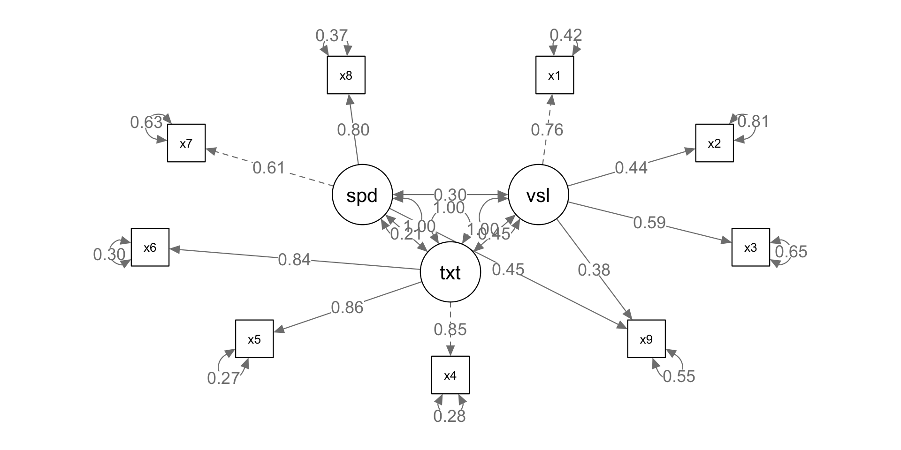STEP 4: model modification
STEP 4: model modification
STEP 4: model modification
The Wald test also produces a significant p-value, suggesting this change to the model should be investigated more thoroughly.
However, on further inspection, it actually produces a larger RMS error (and therefore a worse fit) than our original model.
CAVEATS: Cross-validation
One thing to worry about in SEM is making sure that the model works for more than just the data it was made for.
If the data set is large enough, we might split the data in two (male and female is sometimes used, assuming these are expected involve the same relationships between variables), fit the model to the two data sets separately, and then compare the model parameters (coefficient estimates) to check that they are similar.
CAVEATS: Power and SEM
SEM is a large sample size technique, and parameter estimates will only be stable with N>200 participants. A further standard recommendation is to test at least 5 (and ideally 10) participants per measured variable (while still requiring at least 200 observations). This is because the parameters we are estimating are effectively correlation coefficients, and these are very hard to estimate precisely with small sample sizes.
CAVEATS: Missing Data
One issue that can dramatically reduce power is when observations are missing from a data set. If we excluded all participants with at least one missing data point, for some data sets this would substantially decrease the overall sample size. To avoid this situation, it is common practise to replace missing data points with an estimated value. This maintains the sample size and keeps the model as robust as possible. A simple method to do this is to replace a missing data point with the mean score for that variable.
Other models: Walking dog
A popular example of a SEM is the walking dog model, which comprises of two latent variables, both with two indicators, and a regression connecting them.
Walking dog
lavaan 0.6-12 ended normally after 32 iterations
Estimator ML
Optimization method NLMINB
Number of model parameters 9
Number of observations 301
Model Test User Model:
Test statistic 0.252
Degrees of freedom 1
P-value (Chi-square) 0.616
Model Test Baseline Model:
Test statistic 306.333
Degrees of freedom 6
P-value 0.000
User Model versus Baseline Model:
Comparative Fit Index (CFI) 1.000
Tucker-Lewis Index (TLI) 1.015
Loglikelihood and Information Criteria:
Loglikelihood user model (H0) -1771.622
Loglikelihood unrestricted model (H1) -1771.496
Akaike (AIC) 3561.244
Bayesian (BIC) 3594.608
Sample-size adjusted Bayesian (BIC) 3566.065
Root Mean Square Error of Approximation:
RMSEA 0.000
90 Percent confidence interval - lower 0.000
90 Percent confidence interval - upper 0.121
P-value RMSEA <= 0.05 0.728
Standardized Root Mean Square Residual:
SRMR 0.005
Parameter Estimates:
Standard errors Standard
Information Expected
Information saturated (h1) model Structured
Latent Variables:
Estimate Std.Err z-value P(>|z|) Std.lv Std.all
X =~
x1 1.000 0.984 0.844
x2 0.421 0.150 2.811 0.005 0.414 0.352
Y =~
x4 1.000 1.117 0.961
x5 0.880 0.116 7.571 0.000 0.983 0.763
Regressions:
Estimate Std.Err z-value P(>|z|) Std.lv Std.all
Y ~
X 0.521 0.181 2.876 0.004 0.459 0.459
Variances:
Estimate Std.Err z-value P(>|z|) Std.lv Std.all
.x1 0.390 0.325 1.201 0.230 0.390 0.287
.x2 1.210 0.114 10.617 0.000 1.210 0.876
.x4 0.103 0.153 0.676 0.499 0.103 0.077
.x5 0.694 0.131 5.292 0.000 0.694 0.418
X 0.969 0.340 2.849 0.004 1.000 1.000
.Y 0.985 0.192 5.134 0.000 0.789 0.789semPlot diagram
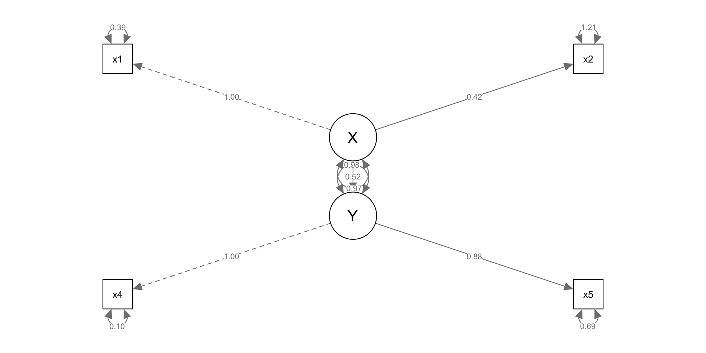Other models: Fixing covariances
We can also constrain covariances to 0 with the same basic syntax.
For covariances, you can have only one variable left of ~~ but multiple on the right.
Here we have made the assumption that the visual latent construct is orthogonal to textual and speed.
Other models: Fixing covariances
lavaan 0.6-12 ended normally after 33 iterations
Estimator ML
Optimization method NLMINB
Number of model parameters 19
Number of observations 301
Model Test User Model:
Test statistic 140.599
Degrees of freedom 26
P-value (Chi-square) 0.000
Model Test Baseline Model:
Test statistic 918.852
Degrees of freedom 36
P-value 0.000
User Model versus Baseline Model:
Comparative Fit Index (CFI) 0.870
Tucker-Lewis Index (TLI) 0.820
Loglikelihood and Information Criteria:
Loglikelihood user model (H0) -3765.392
Loglikelihood unrestricted model (H1) -3695.092
Akaike (AIC) 7568.783
Bayesian (BIC) 7639.218
Sample-size adjusted Bayesian (BIC) 7578.961
Root Mean Square Error of Approximation:
RMSEA 0.121
90 Percent confidence interval - lower 0.102
90 Percent confidence interval - upper 0.141
P-value RMSEA <= 0.05 0.000
Standardized Root Mean Square Residual:
SRMR 0.145
Parameter Estimates:
Standard errors Standard
Information Expected
Information saturated (h1) model Structured
Latent Variables:
Estimate Std.Err z-value P(>|z|) Std.lv Std.all
visual =~
x1 1.000 0.724 0.621
x2 0.778 0.141 5.532 0.000 0.563 0.479
x3 1.107 0.214 5.173 0.000 0.801 0.710
textual =~
x4 1.000 0.984 0.847
x5 1.132 0.067 16.954 0.000 1.114 0.865
x6 0.925 0.056 16.438 0.000 0.911 0.833
speed =~
x7 1.000 0.674 0.619
x8 1.150 0.165 6.990 0.000 0.775 0.766
x9 0.878 0.123 7.166 0.000 0.592 0.587
Covariances:
Estimate Std.Err z-value P(>|z|) Std.lv Std.all
visual ~~
textual 0.000 0.000 0.000
speed 0.000 0.000 0.000
textual ~~
speed 0.173 0.052 3.331 0.001 0.261 0.261
Variances:
Estimate Std.Err z-value P(>|z|) Std.lv Std.all
.x1 0.835 0.118 7.064 0.000 0.835 0.614
.x2 1.065 0.105 10.177 0.000 1.065 0.771
.x3 0.633 0.129 4.899 0.000 0.633 0.496
.x4 0.382 0.049 7.854 0.000 0.382 0.283
.x5 0.418 0.059 7.113 0.000 0.418 0.252
.x6 0.367 0.044 8.374 0.000 0.367 0.307
.x7 0.729 0.084 8.731 0.000 0.729 0.616
.x8 0.422 0.084 5.039 0.000 0.422 0.413
.x9 0.665 0.071 9.383 0.000 0.665 0.655
visual 0.524 0.130 4.021 0.000 1.000 1.000
textual 0.969 0.112 8.647 0.000 1.000 1.000
speed 0.454 0.096 4.728 0.000 1.000 1.000Other models: Fixing covariances
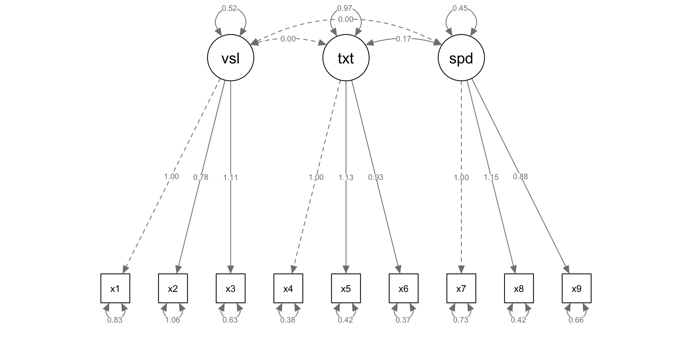Complex models
We can put multiple latent variables, regressions, and covariances together to build complex models.
Here is a three factor mediation model:
visualis dependent ontextualandspeedThe effect of
speedonvisualis partially mediated bytextual.
Complex models
Complex models
lavaan 0.6-12 ended normally after 33 iterations
Estimator ML
Optimization method NLMINB
Number of model parameters 21
Number of observations 301
Model Test User Model:
Test statistic 85.306
Degrees of freedom 24
P-value (Chi-square) 0.000
Model Test Baseline Model:
Test statistic 918.852
Degrees of freedom 36
P-value 0.000
User Model versus Baseline Model:
Comparative Fit Index (CFI) 0.931
Tucker-Lewis Index (TLI) 0.896
Loglikelihood and Information Criteria:
Loglikelihood user model (H0) -3737.745
Loglikelihood unrestricted model (H1) -3695.092
Akaike (AIC) 7517.490
Bayesian (BIC) 7595.339
Sample-size adjusted Bayesian (BIC) 7528.739
Root Mean Square Error of Approximation:
RMSEA 0.092
90 Percent confidence interval - lower 0.071
90 Percent confidence interval - upper 0.114
P-value RMSEA <= 0.05 0.001
Standardized Root Mean Square Residual:
SRMR 0.065
Parameter Estimates:
Standard errors Standard
Information Expected
Information saturated (h1) model Structured
Latent Variables:
Estimate Std.Err z-value P(>|z|) Std.lv Std.all
visual =~
x1 1.000 0.900 0.772
x2 0.554 0.100 5.554 0.000 0.498 0.424
x3 0.729 0.109 6.685 0.000 0.656 0.581
textual =~
x4 1.000 0.990 0.852
x5 1.113 0.065 17.014 0.000 1.102 0.855
x6 0.926 0.055 16.703 0.000 0.917 0.838
speed =~
x7 1.000 0.619 0.570
x8 1.180 0.165 7.152 0.000 0.731 0.723
x9 1.082 0.151 7.155 0.000 0.670 0.665
Regressions:
Estimate Std.Err z-value P(>|z|) Std.lv Std.all
visual ~
textual 0.321 0.067 4.776 0.000 0.354 0.354
speed 0.538 0.130 4.152 0.000 0.370 0.370
textual ~
speed 0.452 0.124 3.654 0.000 0.283 0.283
Variances:
Estimate Std.Err z-value P(>|z|) Std.lv Std.all
.x1 0.549 0.114 4.833 0.000 0.549 0.404
.x2 1.134 0.102 11.146 0.000 1.134 0.821
.x3 0.844 0.091 9.317 0.000 0.844 0.662
.x4 0.371 0.048 7.778 0.000 0.371 0.275
.x5 0.446 0.058 7.642 0.000 0.446 0.269
.x6 0.356 0.043 8.277 0.000 0.356 0.298
.x7 0.799 0.081 9.823 0.000 0.799 0.676
.x8 0.488 0.074 6.573 0.000 0.488 0.477
.x9 0.566 0.071 8.003 0.000 0.566 0.558
.visual 0.537 0.117 4.582 0.000 0.664 0.664
.textual 0.901 0.106 8.496 0.000 0.920 0.920
speed 0.384 0.086 4.451 0.000 1.000 1.000Complex models
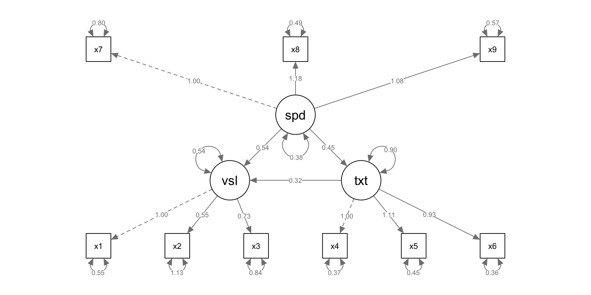Other lavaan Features
lavaan is highly customizable and contains many features useful for fitting complex structural equations.
Alternate estimators
Proper treatment of categorical variables
Input using covariance matrices
Additional arguments for specifying models
Alternate estimators
lavaan defaults to using a full-information Maximum-Likelihood (ML) Estimator. This is the most efficient estimator available and can handle missing data (missing=ml).
We may want to specify alternate estimators if our data do not meet the assumptions for ML.
By adding the estimator= argument to our cfa(), sem(), or lavaan() call, we can choose another estimator.
Some useful choices:
estimator="MLM": ML with robust errors and Satorra-Bentler test statistic.estimator="WLSMV": Weighted least squares with mean and variance adjusted test statistic (needed for categorical endogenous variables).
Example sem() call:
lavaan 0.6-12 ended normally after 1 iterations
Estimator ML
Optimization method NLMINB
Number of model parameters 21
Number of observations 301
Model Test User Model:
Standard Robust
Test Statistic 85.306 80.872
Degrees of freedom 24 24
P-value (Chi-square) 0.000 0.000
Scaling correction factor 1.055
Satorra-Bentler correction Categorical variables
If you provide lavaan categorical data as an endogenous variable, it will automatically use a proper estimator (e.g. Diagonally Weighted Least Squares).
To specify an ordinal variable as categorical, you will want to make it an ordered factor:
Unordered categorical variables (factors) will need to be split into dummy variables prior to estimation.
Covariance input matrix
Here is example syntax from the lavaan tutorial page using the lower half of a covariance matrix combined with the getCov() function to create a full covariance matrix with variable names. Note the use of sample.cov= and sample.nobs= arguments to sem() instead of data=.
lower <- '
11.834
6.947 9.364
6.819 5.091 12.532
4.783 5.028 7.495 9.986
-3.839 -3.889 -3.841 -3.625 9.610
-21.899 -18.831 -21.748 -18.775 35.522 450.288 '
wheaton.cov <-
getCov(lower, names = c("anomia67", "powerless67", "anomia71",
"powerless71", "education", "sei"))
fit <- sem(wheaton.model, sample.cov = wheaton.cov, sample.nobs = 932)Additional arguments
Most of the time you will be fine with lavaan’s default settings.
However, there are many, many arguments you can give to sem(), cfa(), or lavaan() to adjust how models are estimated.
To see these arguments, view the help files using ?lavaan and ?lavOptions.
Help
You can find a more detailed lavaan tutorial and a number of resources via the official lavaan website.
For troubleshooting, the lavaan Google group is very active and frequented by the package authors.
lavaan is in constant development, so you may want to check the GitHub repository for current issues or new features.
If you need a new feature or bug fix from the development version, you can install it using install_github() in the devtools package.